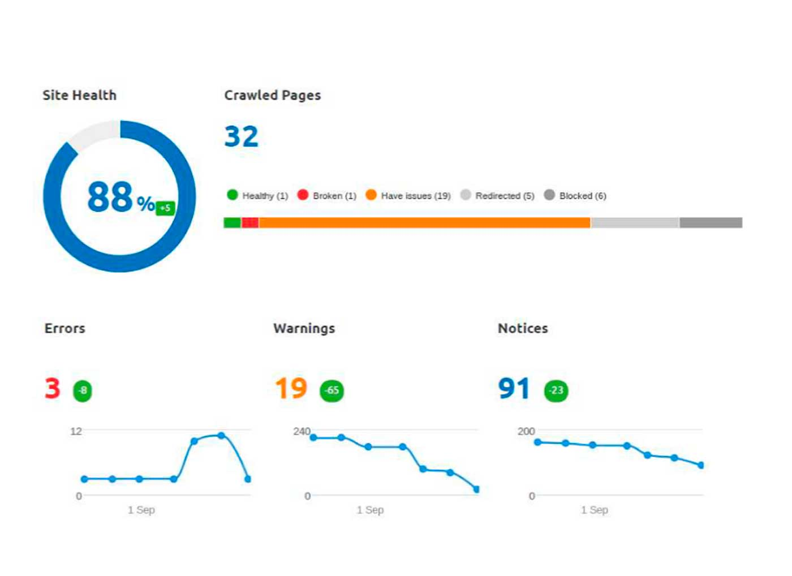
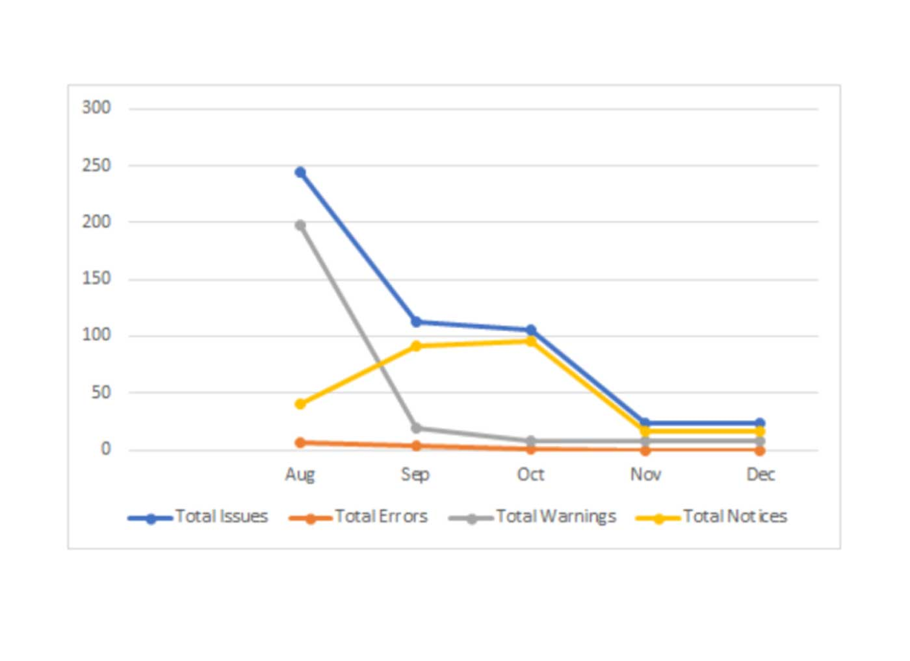
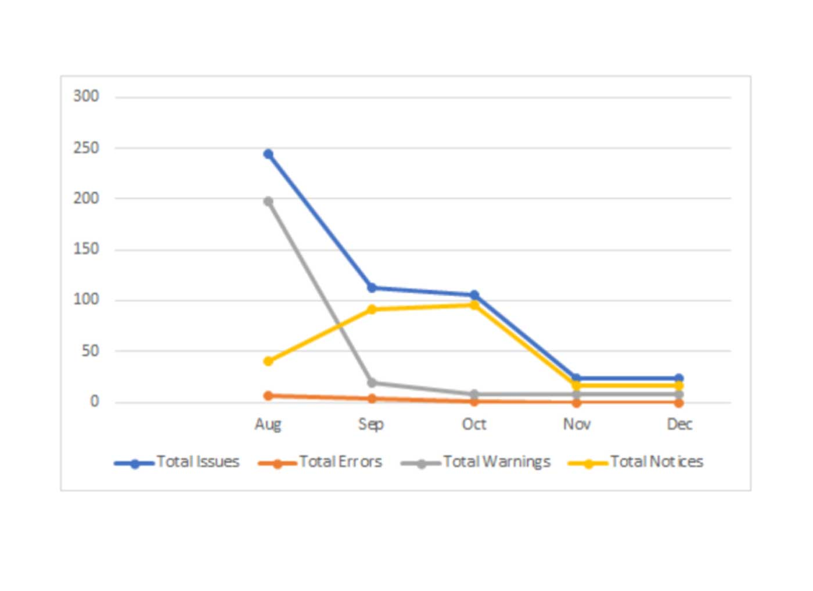

Understanding the product Flieber
The Flieber product facilitates inventory planning for those who sell directly to the consumer. The software understands the behavior of buyers, synchronizes sales, suppliers and stock. This way, it is possible to make faster and better decisions to maximize profit.
Processes:
- Planning
- Technical adjustments - On Page
- Creation of the customer journey
- Content production - Off Page
Planning
The priority was to correct all critical errors that the site presented, then adjust the remaining pages.
Next, we focused on creating the editorial calendar, keyword study and publishing content on the blog.
Technical adjustments - On Page
The adjustments were made during the first 3 months of work. The images below show the progress of the site during this period.
Results after the first month:
Após 3 meses:
 

Customer journey
In this step we define various search journeys that the end customer can make. With this, we can elaborate better content production strategies for the blog.
Content production - Off Page
In the case of Flieber, they already had a person responsible for writing the texts... Our job was to define, according to the journey, the best keywords and themes to start production.
Thank you for reading, don't forget to check the Flieber website: flieber.com